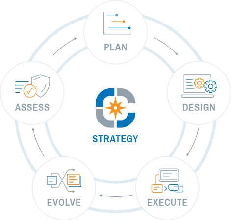

Reliable. Predictable and Secure IT Solutions for your Buisness
Full suite of Integrated Solutions To Manage All Aspects of your IT. Proactive support, no long term contract, and a full team of skilled technicians at your disposal.

Another example headline.
Cras justo odio, dapibus ac facilisis in, egestas eget quam. Donec id elit non mi porta gravida at eget metus. Nullam id dolor id nibh ultricies vehicula ut id elit.
One more for good measure.
Cras justo odio, dapibus ac facilisis in, egestas eget quam. Donec id elit non mi porta gravida at eget metus. Nullam id dolor id nibh ultricies vehicula ut id elit.
Managed Services & Cloud Solutions
We're your IT department! Our managed serrvices includes everything to manage your IT for a single monthly price designed to meet your budjet and support requirements
Disaster Recovery and Backup Planing
A reliable, secure, and constantly monitored backup solution is mandatory for every business. We’ve got you covered. Technology is a fundamental component of your business. We help plan and build the right foundation to support your business goals.
Cyber Security and Threat Assessment
Keeping your network secure these days is no easy task. It requires the right hardware, software and awareness training for your staff. A Managed Services Agreement that includes our team of experts monitoring your network and alerting you of any concerns
Professional IT Services & Technology Consulting
With JJTech you’re getting an entire team of professionals with a wide range of experience, dedicated to providing the best customer service possible. With over 15 years of experience working with companies of
all shapes, we can help your business at every step of the way.
Information Technology (IT) can mean everything from hardware like phones, computers, keyboards, monitors to software, servers, networks and cloud solutions. Computers and software technology are some of the key components when looking at Information Technology. However, behind computers and software the services dive deeper into discussions around document management solutions,
collaboration and cloud, server maintenance, security and user interfaces.
What we do.
We cater to small businesses and small business start-ups of all kinds. We provide a full range of website development services to suit your unique small business needs. We can design and develop your website, IT services, register your domain name and even provide hosting services. We’ll also setup your domain based email accounts and search engine optimization. We’re proud to utilize WordPress to create professional, functional, fully responsive design-built websites at a reasonable cost

Why we do.
It’s simple, we love what we do! We build stress-free professional business relationships with our clients. Striving to ensure we meet each and every one of your needs by getting to know you and your business values. The fact that we wouldn’t exist if it wasn’t for our amazing customers is never lost on us, and for that reason we’ll never make you feel like you’re just another number. We take great pride and honor in helping you build your business, and we’d love to show you why.